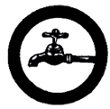

Plumbing
- Identify at least ten (10) parts of a common plumbing installation, and explain the uses of at least three.
- Identify at least six (6) tools used in plumbing.
- Show how to cut, thread, and connect water pipes.
- Repair a leaking water closet.
- Repair a faulty or leaking faucet.
- Tell the correct way of reading a water meter, or tell how a simple water pump works.
- Submit a sketch of, and explain the sewerage system in a house; or submit a sketch of, and explain how a septic tank works.
- Enumerate two (2) local health regulations related to plumbing.
|